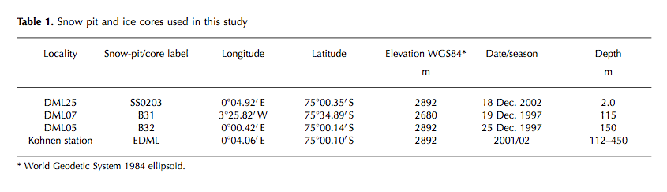

EPICA Dronning Maud Land ice core
EPICA Dronning Maud Land ice core is part of the European Project for Ice Coring in Antarctica (EPICA). The Dronning Maud Land ice core was the second ice core drilled at 2892 meters (75.00167 S, 0.06783' E) in Antarctica.
For general site information see Oerter et al.. 2004.
EDML data on NOAA National Climatic Data Center (NCDS) web site.
EDML data on PANGEA web site.